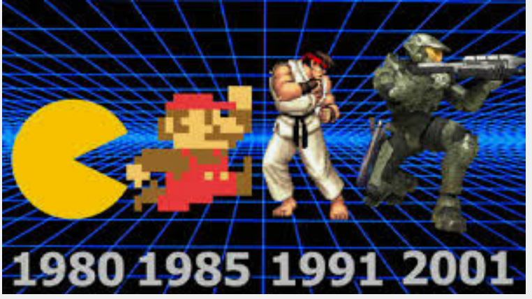

Blip, Bloop: Console History
and Video Games
Video Games... the improvements the industry has made throughout the years have been nothing short but amazing. Do you know when the first gaming console was released for home use? Did you know that gaming was first done by using what was essentially a super computer?
 The Origins: Take a trip back in time when games were first invented.
1980-1990: Did someone say Super Mario?
1990-2000: Wow, using 3D models for gaming!
Gaming Today: No contest, greatest era of gaming